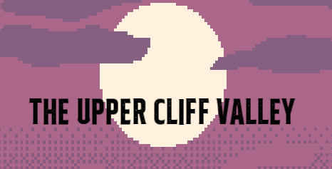

Intro

Hello, I'm Joseph O'Keeffe and this is my Final Year Project 'The Upper-Cliff Valley'
The Upper-Cliff Valley is an RTS (Real time strategy) game, where you train units to collect resources and fight enemies
Defeat the enemies and beat the game by destroying all of their bases that are scattered around the map
But if they destroy your Headquarters, you lose the game!
Project
Main Menu
This is the main menu for my game
You can choose to pick either new game or continue game
New game lets you play a level from the start
Continue game lets you play a level that you have saved
Level Editor
I decided to make a level editor in RayLib instead of SFML
This was quite challenging as I have never used RayLib before but I think it turned out well
You can start creating a brand new level or you can decide to load one of the already made levels and edit those
Once you save these levels that you create, you will be able to play them in the game
This saves them in JSON format
Units
To create units, you use the Headquarters
There are two different types of units. Fighters and Workers
There are two fighters: a Warrior and an Archer (technically a mage type of thing)
The fighters can attack the enemies and group up to make formations
There are three workers: a Miner, an Oil Man and a Hazmat Man
The workers gather resources from their respective building
Buildings

To create buildings, you also you use the Headquarters
There are three different types of buildings to create. A Gold Mine, an Oil Extractor and a Uranium Extractor
These buildings need to be assigned a worker. Only the worker who matches the building can work there
For example the miner could not work on the oil extractor
Multiple workers can be assigned to a building, this speeds up the process and earns you more resources
Enemies
Enemies in the game are called Sucklers
There are two types of sucklers: Sucklers and Big Sucklers
When two Sucklers are near each other, they can merge into a Big Suckler
This makes them have more health and do more damage
When an enemy is defeated, it will drop an item
These items are used to beat the game
Enemy Bases
The enemies have bases scattered around the map
Each base has a different item required to unlock it
Once you have enough of that item and the base is unlocked, you can destroy it
When every base in the game is destroyed, you will have beaten the game
Spaceships and Eggs
Spaceships are what spawn enemies into the game
Throughout the games, at set intervals, the spaceships will fly accross the map
They have different tiers. These change the amount of eggs they spawn and what comes out of the egg
After every interval, one more spaceship will appear, so this ramps up fast!
Inventory
Once you collect items they go into your inventory
You can sort your inventory by quantity or by ID
Formations
You can select multiple units at a time and turn them into a formation
A formation is given a leader and the other units in the formation will follow the leader
Formations make all the units in it a lot stronger
Path Finding
Units and Enemies both use A* pathfinding to navigate around the map
They avoid obstacles such as water and they also avoid buildings
If there is a path nearby, they will use that as it makes them walk faster
Save/Loading
You can save and load data
Player positions, enemy positions, inventory, enemy bases and much more can be saved
Then when you're in the main menu, you can load it back up